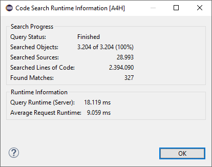

As the search has to process a high number of source code objects
(depending on the scope definition) the result list is build up
incrementally. This way the user gets to see a part of the
result, even if the search run is not finished yet. The objects in
scope are split into multiple packages. The size of the packages can
be set in the properties. The search will enhance the result tree with
the found matches after each package. As long as the search is running
a progress indicator in the eclipse status bar is informing about the
completion level in percentage. In the extended toolbar of the search
result you can find the Runtime Information of the search run.
This overview shows how many objects have been scanned and the overall time
needed for the scan.

Figure 1: Query Runtime Information
Working with the Search Results
Once a search returns some results they are displayed in the Search
View. As a default the matches are grouped by the main
object (e.g. Function group, class) and the object where it can be
found ( e.g function module, method). For each match there are several
options available
Open the object in the corresponding eclipse editor (if one
is registered for the type) and navigate to the line which contains
the match by double clicking on it
Navigate to the location of the next match via the context
menu option Next Match
Navigate to the location of the previous match via the
context menu option Previous Match
Select one or multiple matches and choose the context menu
option Delete Selected Matches to remove them from the current
result list. When refreshing the search result screen, the search is
executed once again and the matches will be visible again in the
result list
The Remove All Matches is used to delete all matches
from the result list. In case that this option is triggered while the
search run is still processing, only the current data from the result
list will be deleted. The matches returned by the search after
triggering this option will be displayed regularly
The Copy options, copies the text of the match in the
clipboard
Figure 2: Context Menu for a node in the result
view
TIP If you want to cancel the processing of
a search request you can use the button from the toolbar of the search
result view.